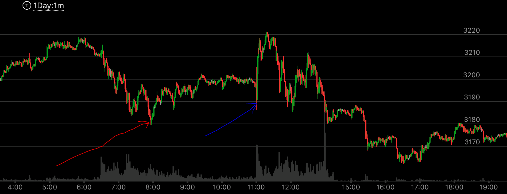
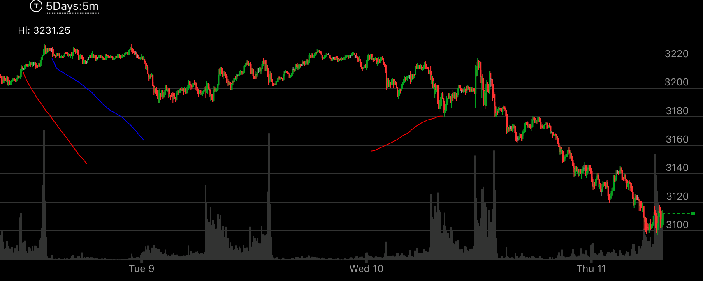
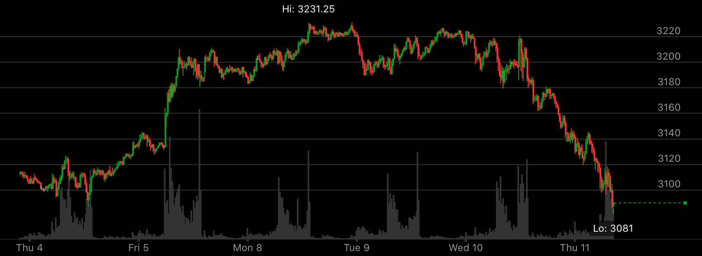
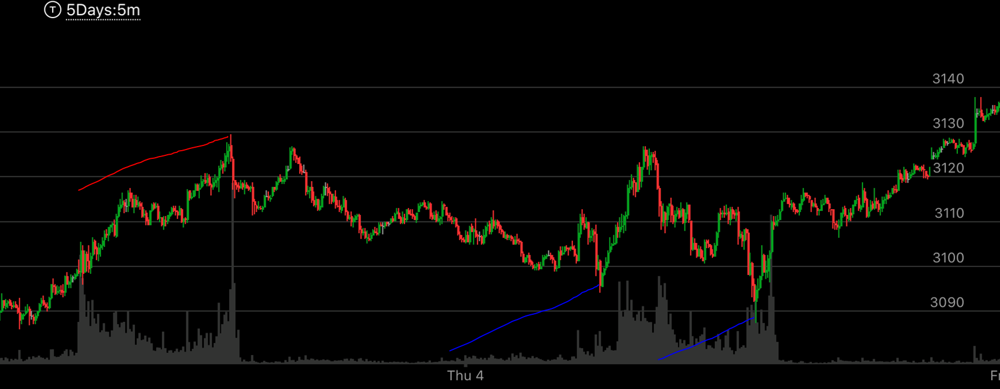
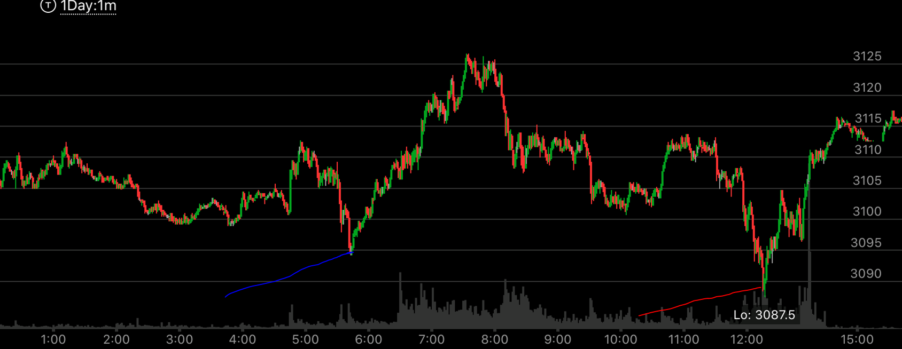

同向内部加速走势
- 大盘已经积累了一定的升幅或者跌幅，存在回调的动力。
- 本次走势还没有回调过，所以可以回调。
- 这个回调方式，是用快速大幅反向运动，然后再次同向加速运动。这个同向加速运动的不到前面高点，中间分为两段或者几段。
最后一段是加速。但是这个加速没有创走势新极点。这样，它的回调位置，一定会低于加速运动的开始。这个位置可能低很多，而且不一定
会立刻反弹，这个取决于在极点的时间长短。
- 这个走势会创在极点徘徊的新低或者新高后，立刻反弹。以上涨为例，它会高点徘徊后，突然走低，创了最近高点的低点，然后迅速走高。
加速上涨，但是没有走势新高，然后下来。
- 走低的程度取决于同向走势发生前在高点徘徊的时间，如果是几天，那么，这个下跌幅度会很大，时间会很久，也会是几天下跌。如果只有一分钟，
那么下跌时间也很短，

图示：Wed开盘后，快速下跌，2880跌倒了2850，然后立刻上涨，形成了两段上涨走势，
下来的时候，在2860附近长时间震荡。最后大跌。跌破了2850.这个说明它会大幅回调，但是未来会反弹，创新高。

图示：6：30创新高后，立刻下来。然后出现了上涨的两段走势。这个说明，这个没有反转。
但是会大幅回调。加上这个已经是第二天上涨。第一天涨了100点，第二天也涨了100点。有了足够的下跌动力。7：00大盘先快速下跌，
然后很快拉回原位，再次缓慢下跌。这个会跌破2680的低点。



图示:这是一个几天的走势。首先它冲高，但是在高点没有反转，也没有相对弱势，然后再高点停留了好几天。
从图三看，它停留了4天，可以说非常的长。图一中：红线代表是近期低点，然后立刻反弹，蓝线借着Fed宣布，加速上涨。然后开始大跌。这个因为再高点停留了
四天，那么可以想到，再低点也应该停留很久，不会立刻反弹的。图二是5分钟图，可以看到高点和第二根红线引发的内部加速上涨，导致的大跌。


图示:这个则是一个在高点停留时间很短的例子。图一中，红线是这次走势的高点，只停留了一分钟，就很快下来了。
第一个蓝线，则是这次走势的低点，可以看到，它是最近的新低，然后加速上涨，但是没有新高，然后回头。图二中，蓝线是第一个低点。它加速成为完成走势后，回头向下，
大跌。红线是第二低点。可见它的第二低点时间很短。看图二，它从低点开始速度很快，后面变得非常慢。这样符合相对论的原则。最后大涨，突破原来红线指示的新高。